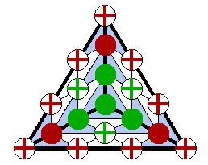

The software described in these pages lets you explore the Bernstein-B ézier form of a bivariate polynomial. In particular it allows you to construct minimal determining sets for bivariate spline spaces defined on triangulations. It's great for teaching the Bernstein-B ézier form, and it can also serve as a research tool.
java MDS
Start clicking on the control panel and the drawing window that will pop up. In particular click on the points in the triangles.
To whet your appetite, here is an example. The colorful triangle nearby, like most of the figures on these pages, were obtained with the software. It shows the well known Clough-Tocher finite element as it can be used for interpolation. You see one large (macro) triangle that has been divided into three smaller micro triangles. Bold black lines indicate the boundaries of the triangles. Each of the micro triangles is covered by a triangular mesh drawn with thin black lines. The points marked with colored squares and circles indicate coefficients of a bivariate cubic polynomial defined on each micro triangle. The gray quadrilaterals indicate smoothness conditions across the boundaries between micro triangles, each involving four of the coefficients. The red crosses are determined by the interpolation conditions, the green crosses are determined by the requirement to maintain differentiability across the boundaries of individual macro triangles, and the filled red and green circles are determined by internal smoothness conditions.
This is only the tip of a large iceberg. If you want to find out more follow the links below. If you are new to the Bernstein-Bézier form, splines, and minimal determining sets, follow the links in the given sequence, otherwise, or if you are impatient, skip around as you wish!
[15-May-2020]